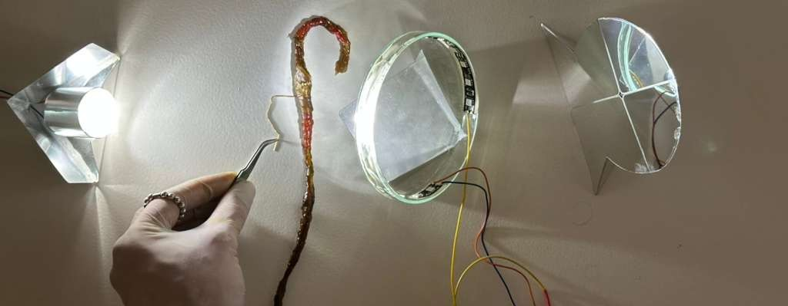
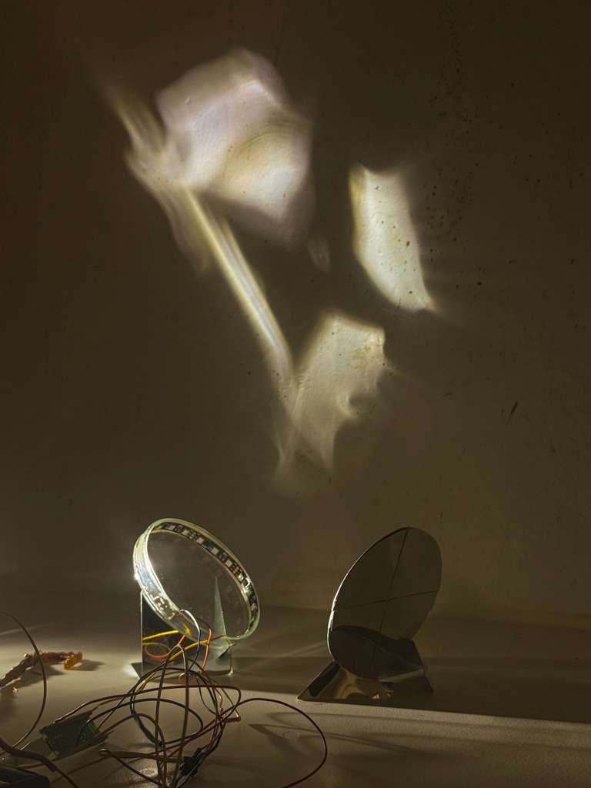
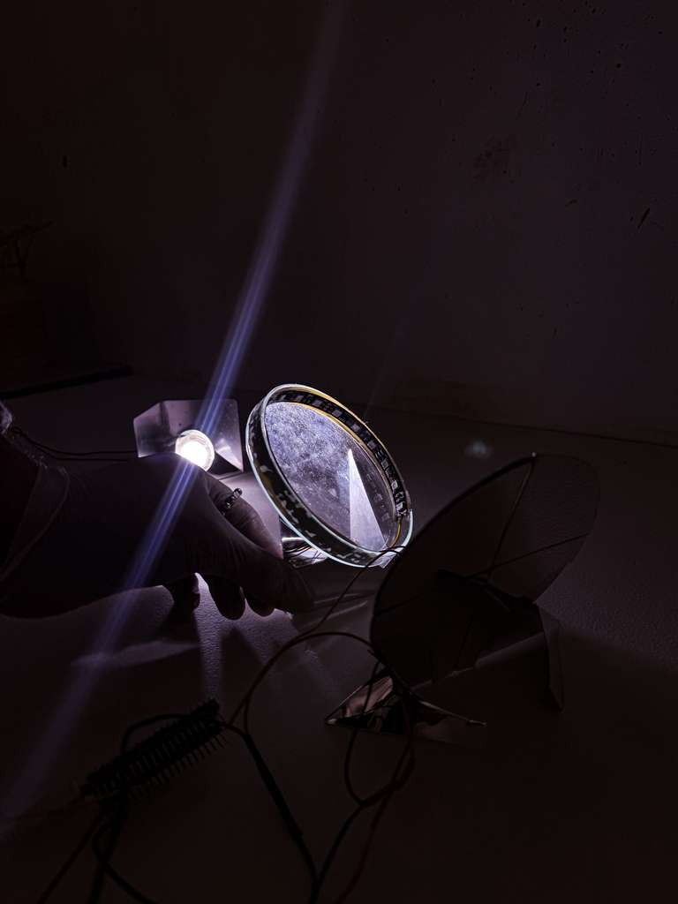
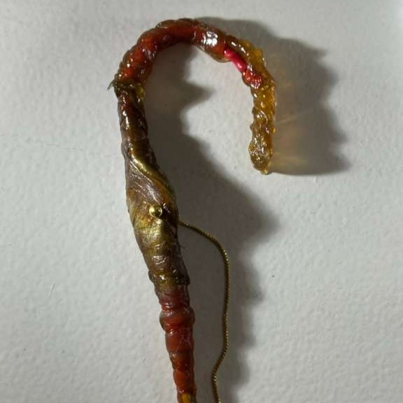
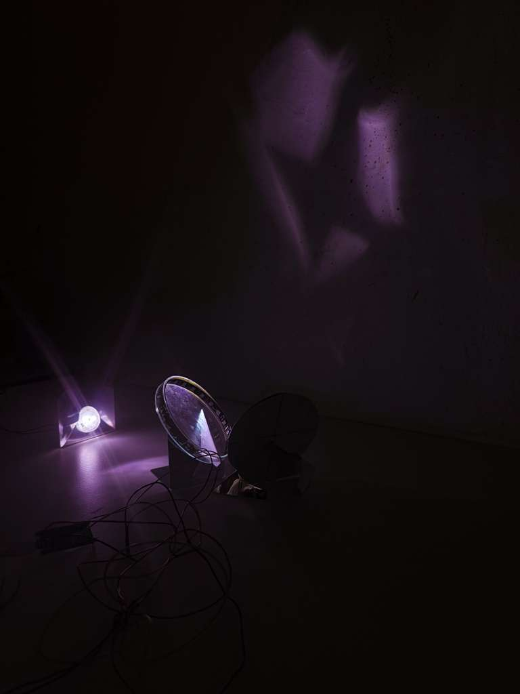
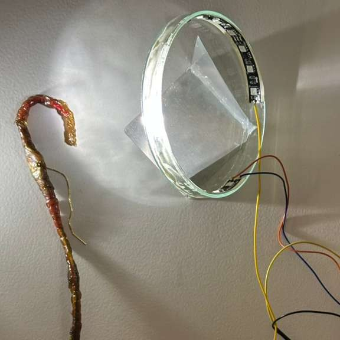

Aura is a wearable, organ-like earpiece that senses the wearer's pulse and translates biometric data into light. The heartbeat is captured through a pulse sensor, interpreted by a Raspberry Pi Pico W, and expressed as a rhythmic NeoPixel pattern — rendering bodily rhythm as atmosphere rather than data on a screen. The electronics are embedded in biotic skin made from bacterial cellulose, situating the device between organism and artefact.
Overview

Aura components — bacterial cellulose casing, NeoPixel ring, mirror system · 2025
Process
The project began by asking how internal physiological processes could be externalised in a way that feels relational rather than extractive. Working across macrobiotic therapy, biometric AI, and speculative domestic infrastructure — we prototyped a pulse-sensing circuit using a Raspberry Pi Pico W, ADC pulse sensor, and an 18-LED NeoPixel strip powered by a 6V battery. The hardware was programmed in MicroPython to map real-time BPM directly to light rhythm and intensity. The biotic casing was grown from bacterial cellulose — introducing time, care, and fragility into the material system.

Outcome
Aura proposes an alternative vision of domestic infrastructure: not centralized, invisible, or automated — but intimate, responsive, and grounded in biological rhythm. The device functions as a soft symbiotic organ, neither fully internal nor external, that extends the body into its surroundings through light. The project brings together physical computing, biotic materials, and speculative design into a single artefact exploring how future systems of care might operate through attunement rather than control.

Signal Flow
Aura
Signal Flow · Hardware Architecture
/ Heart → Sensor → Pico → NeoPixel → Light → Wall /
Documentation


